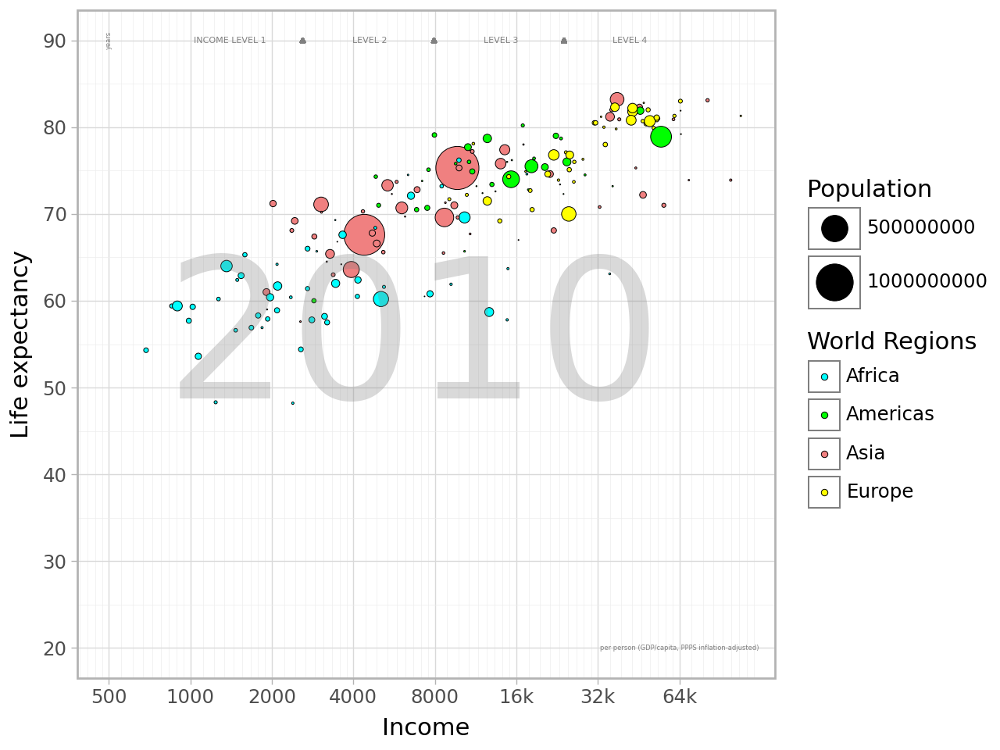
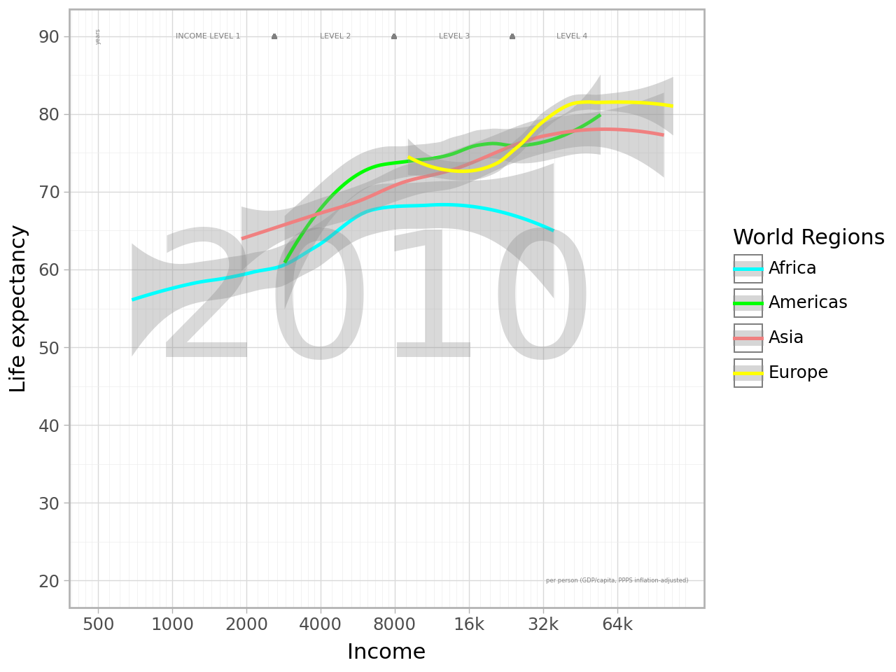
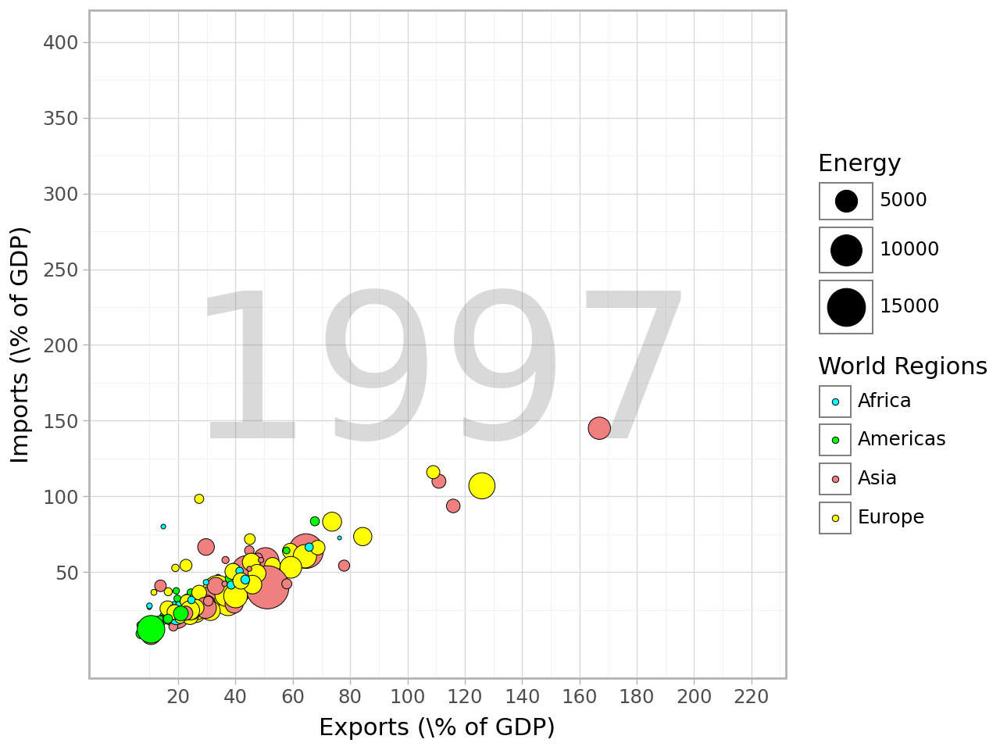
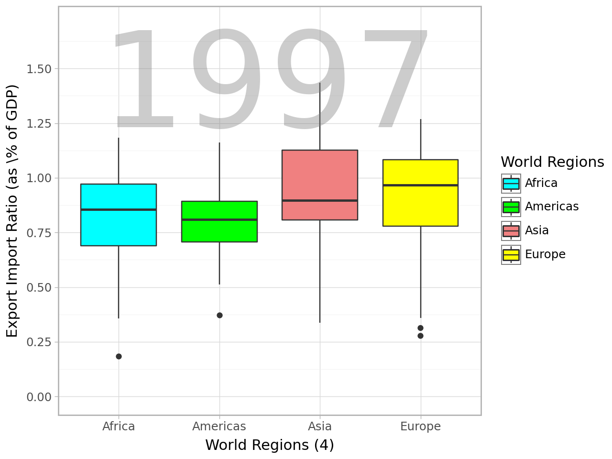
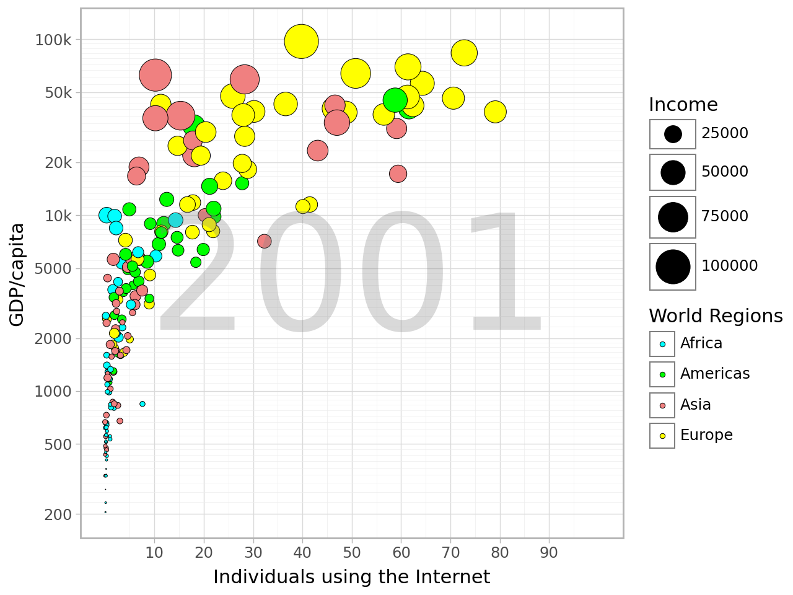
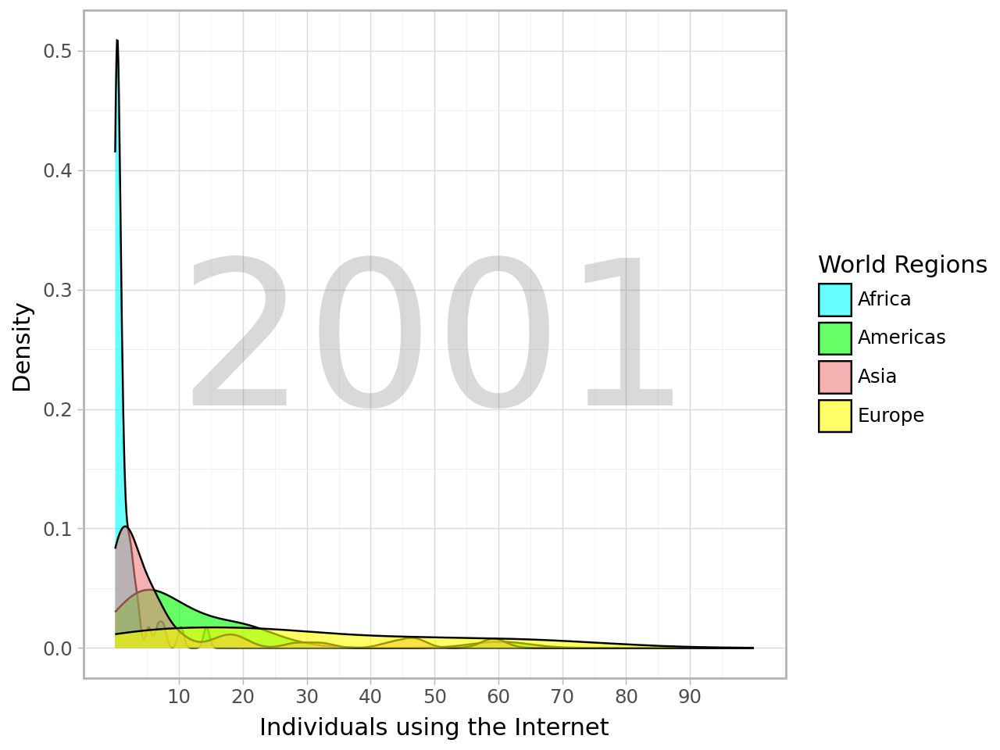

import pandas as pd
import numpy as npLab 1 - Gapminder
Task 1:
- The aesthetics used in this graph are income on the x-axis, life expectancy on the y-axis, and colored by world region. The size of the points are mapped to population of the nation. Additionally, the annotation of “2010” in the background references the year of the data.
q1 = pd.read_csv("C:\\Users\\morag\\OneDrive\\Documents\\MSBA\\GSB 544\\Labs\\Labs---GSB-544\\Data\\q1data.csv")
q1 = q1.dropna(subset=["four_regions"])from plotnine import geom_point, aes, ggplot, theme_light, scale_fill_manual, scale_x_log10, scale_y_continuous, labs, annotate, scale_size
(ggplot(q1, aes(x="income", y="life_exp", size="population"))
+ geom_point(aes(fill="four_regions"), color="black", stroke=0.2)
+ scale_size(range=(0,11))
+ theme_light()
+ scale_fill_manual(values=["aqua", "lime", "lightcoral", "yellow"], labels=["Africa", "Americas", "Asia", "Europe"])
+ scale_x_log10(limits=(500, 110000), breaks=[500*(2**i) for i in range(8)], labels=(500, 1000, 2000, 4000, 8000, "16k", "32k", "64k"))
+ scale_y_continuous(limits=(20, 90), breaks=range(20, 91, 10))
+ labs(x="Income", y="Life expectancy", fill="World Regions", size="Population")
+ annotate("text", x=500, y=90, label="years", angle=90, size=3, color="grey")
+ annotate("text", x=64000, y=20, label="per person (GDP/capita, PPPS inflation-adjusted)", size=3, color="grey")
+ annotate("text", x=6700, y=55, label="2010", size=90, color="grey", alpha=0.3)
+ annotate("text", x=1400, y=90, label="INCOME LEVEL 1", size=4, color="grey")
+ geom_point(aes(x=2600, y=90), shape="^", fill="grey", size=0.5, color="grey")
+ annotate("text", x=4600, y=90, label="LEVEL 2", size=4, color="grey")
+ geom_point(aes(x=7950, y=90), shape="^", fill="grey", size=0.5, color="grey")
+ annotate("text", x=14000, y=90, label="LEVEL 3", size=4, color="grey")
+ geom_point(aes(x=24000, y=90), shape="^", fill="grey", size=0.5, color="grey")
+ annotate("text", x=42000, y=90, label="LEVEL 4", size=4, color="grey")
)C:\Users\morag\anaconda3\Lib\site-packages\plotnine\layer.py:364: PlotnineWarning: geom_point : Removed 2 rows containing missing values.
- We are visualizing four variables here: income, life expectancy, population, and world region. These are three quantitative variables and one categorical variables with more than two factors. Some different geometries we could use are a 2d density plot and area charts. With both of these options, we lose a dimension of the previous visualization. With density and area plots, we know longer have singular observations on the graph and we cannot size them by their population. That is an aspect lost. I’m going to create a line plot of this data because I feel like we lose some data regarding populations of the countries but we gain more insight into the four regions relationship on life expectancy and income. In this visualization, using geom_line, we entirely lose the aesthetic of population size. Instead, we get a clearer look into the relationship between income and life expectancy across the different regions. I would personally not use this geometry to visualzie this data and I believe that a scatter plot makes much more sense as it highlights each individual country while separating them into region by color.
from plotnine import geom_line, geom_smooth, scale_color_manual
(ggplot(q1, aes(x="income", y="life_exp", color="four_regions"))
+ geom_smooth(method="loess", se=True)
+ theme_light()
+ scale_color_manual(values=["aqua", "lime", "lightcoral", "yellow"], labels=["Africa", "Americas", "Asia", "Europe"])
+ scale_x_log10(limits=(500, 110000), breaks=[500*(2**i) for i in range(8)], labels=(500, 1000, 2000, 4000, 8000, "16k", "32k", "64k"))
+ scale_y_continuous(limits=(20, 90), breaks=range(20, 91, 10))
+ labs(x="Income", y="Life expectancy", color="World Regions", size="Population")
+ annotate("text", x=500, y=90, label="years", angle=90, size=3, color="grey")
+ annotate("text", x=64000, y=20, label="per person (GDP/capita, PPPS inflation-adjusted)", size=3, color="grey")
+ annotate("text", x=6700, y=55, label="2010", size=90, color="grey", alpha=0.3)
+ annotate("text", x=1400, y=90, label="INCOME LEVEL 1", size=4, color="grey")
+ geom_point(aes(x=2600, y=90), shape="^", fill="grey", size=0.5, color="grey")
+ annotate("text", x=4600, y=90, label="LEVEL 2", size=4, color="grey")
+ geom_point(aes(x=7950, y=90), shape="^", fill="grey", size=0.5, color="grey")
+ annotate("text", x=14000, y=90, label="LEVEL 3", size=4, color="grey")
+ geom_point(aes(x=24000, y=90), shape="^", fill="grey", size=0.5, color="grey")
+ annotate("text", x=42000, y=90, label="LEVEL 4", size=4, color="grey")
)
Task 2:
- The aesthetics used in this graph are exports as a percentage of GDP on the x-axis, imports as a percentage of GDP on the y-axis, and colored by world region. The size of the points are mapped to the energy use of the nation. Additionally, the annotation of “1997” in the background references the year of the data.
q2 = pd.read_csv("C:\\Users\\morag\\OneDrive\\Documents\\MSBA\\GSB 544\\Labs\\Labs---GSB-544\\Data\\q2data.csv")
q2 = q2.dropna(subset=["four_regions", "exports", "imports", "energy"])from plotnine import scale_x_continuous
(ggplot(q2, aes(x="exports", y="imports", size="energy"))
+ geom_point(aes(fill="four_regions"), color="black", stroke=0.2)
+ scale_size(range=(0,11))
+ theme_light()
+ scale_fill_manual(values=["aqua", "lime", "lightcoral", "yellow"], labels=["Africa", "Americas", "Asia", "Europe"])
+ scale_x_continuous(limits=(0, 221), breaks=range(20, 221, 20))
+ scale_y_continuous(limits=(0, 401), breaks=range(50, 401, 50))
+ labs(x="Exports (\% of GDP)", y="Imports (\% of GDP)", fill="World Regions", size="Energy")
+ annotate("text", x=112, y=175, label="1997", size=93, color="grey", alpha=0.3)
)
- This is the same case as last time. We are still trying to visualize three quantitative and one categorical variable. A different way to visualize the relationship between all of these variables would likely result in the loss of at least one quantitative variable. For this example, I want to use box plots, and facet by world region. In this case, we lost information on the energy consumption of each nation and we lost the ability to see each individual observation. But, I have decided to create a new variable: export to import ratio. Is this a metric used in the real economic world? Probably not. Does it give us information about how much a country’s economy is reliant on trade? Yes, I believe it gives a glimpse into that. This boxplot is not doing anywhere near the same visualization as the scatter plot above, instead it gives us much more insight into the four regions and the differences between them in exporting/importing as a part of their GDPs.
q2["export/import"] = q2["exports"] / q2["imports"]from plotnine import geom_boxplot, scale_x_discrete
(ggplot(q2, aes(x="four_regions", y="export/import", fill="four_regions"))
+ geom_boxplot()
+ theme_light()
+ scale_fill_manual(values=["aqua", "lime", "lightcoral", "yellow"], labels=["Africa", "Americas", "Asia", "Europe"])
+ scale_x_discrete(labels=["Africa", "Americas", "Asia", "Europe"])
+ scale_y_continuous(limits=(0, 1.7), breaks=np.arange(0, 1.75, 0.25))
+ labs(x="World Regions (4)", y="Export Import Ratio (as \% of GDP)", fill="World Regions")
+ annotate("text", x=2.5, y=1.4, label="1997", size=100, color="grey", alpha=0.4)
)
Task 3:
- The aesthetics used in this graph are individuals using the internet (as a percentage of the population) on the x-axis, GDP/capita on the y-axis, and colored by world region. The size of the points are mapped to income (assuming its average income in the nation). Additionally, the annotation of “2001” in the background references the year of the data.
q3 = pd.read_csv("C:\\Users\\morag\\OneDrive\\Documents\\MSBA\\GSB 544\\Labs\\Labs---GSB-544\\Data\\q3data.csv")
q3 = q3.dropna(subset=["internet_users", "income", "four_regions", "gdp"])from plotnine import scale_y_log10
(ggplot(q3, aes(x="internet_users", y="gdp", size="income"))
+ geom_point(aes(fill="four_regions"), color="black", stroke=0.2)
+ scale_size(range=(0,11))
+ theme_light()
+ scale_fill_manual(values=["aqua", "lime", "lightcoral", "yellow"], labels=["Africa", "Americas", "Asia", "Europe"])
+ scale_x_continuous(limits=(0, 100), breaks=range(10, 91, 10))
+ scale_y_log10(limits=(200, 110000), breaks=[200, 500, 1000, 2000, 5000, 10000, 20000, 50000, 100000], labels=(200, 500, 1000, 2000, 5000, "10k", "20k", "50k", "100k"))
+ labs(x="Individuals using the Internet", y="GDP/capita", fill="World Regions", size="Income")
+ annotate("text", x=50, y=4000, label="2001", size=93, color="grey", alpha=0.3)
)C:\Users\morag\anaconda3\Lib\site-packages\plotnine\layer.py:364: PlotnineWarning: geom_point : Removed 1 rows containing missing values.
- This is a visualization with three quantitative variables and one categorical variable, just like in the earlier examples. I am trying to experiment and practice with different geometries, so I don’t want to use smoothed line plots, using geom_smooth and geom_line, and I don’t want to use geom_boxplot. In this case, I do think the relationship between GDP/capita and the percentage of Internet-using individuals is incredibly interesting. Income, might be slightly redundant. As we see in the plot above, the nations with low GDP/capita also have low average incomes and vice versa. Now, I’m more interested in the internet usage spread across these four regions. Was Europe, Africa, Asia, or the Americas more technologically proficient in the early 2000’s? A density graph can answer that question. This visualization does lose loads of valuable information. It no longer plots individual points, or countries. It no longer includes GDP/capita or income. A density graph, or histogram, can only plot one quantitatve variable.
from plotnine import geom_density
(ggplot(q3, aes(x="internet_users", fill="four_regions"))
+ geom_density(alpha=0.6)
+ theme_light()
+ scale_fill_manual(values=["aqua", "lime", "lightcoral", "yellow"], labels=["Africa", "Americas", "Asia", "Europe"])
+ scale_x_continuous(limits=(0, 100), breaks=range(10, 91, 10))
+ labs(x="Individuals using the Internet", y="Density", fill="World Regions")
+ annotate("text", x=50, y=0.25, label="2001", size=93, color="grey", alpha=0.3)
)